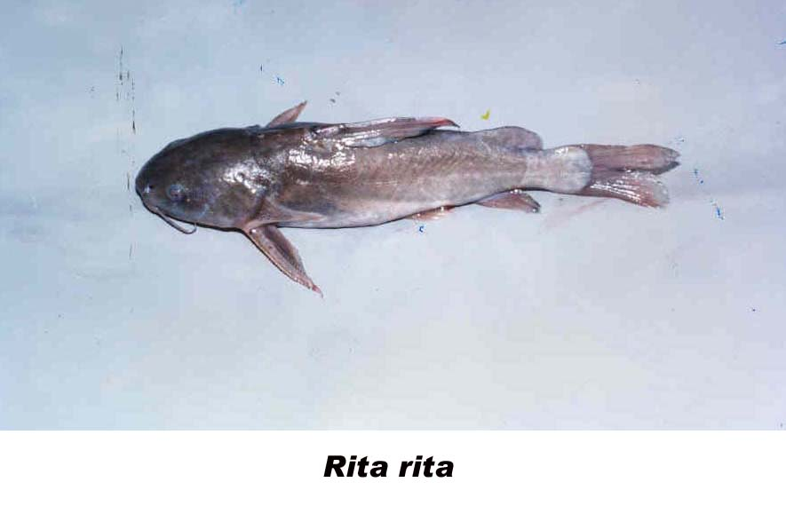

|
DIGITISED INVENTORY OF FRESHWATER FINFISHES AND SHELL FISHES OF INDIA |
Rita rita
Taxonomic
Details
----- Valid Name
----- Classification
----- Synonyms
----- Common Names
Other
Biological Details
----- Habit and
Habitat
----- Morphological
Features
----- Reproductive
Biology
---------- Breeding
season
---------- Breeding techinique
---------- Fishing methods
----- Biology
Stages of development:
Economic
Importance
----- Uses
----- Parts Used
Economic potenial to the country
----- ----- Fishery statistics
Miscellaneous Information
Literature
Name :Rita
rita
(Hamilton), 1822

Family: Bagridae
Classification:
Phylum: Chordata Subphylum: Vertebrata
Class: Actinopterygii Subclass:Neopterygii
Division: Teleostei Subdivision: Euteleostei
SuperOrder: Ostariophysi Order:Siluriformes
SubOrder: N.A. Family:Bagridae
Subfamily:N.A.
Synonyms: Pimelodus rita Hamilton, 1822
Rita buchanani Bleeker, 1853
Rita rita (Hamilton), 1822
Rita ritoides (Valenciennes), 1840
Rita sacerdotum Anderson, 1878
Rita ritoides Vinciguerra, 1890
Common Names:
HABIT & HABITAT: Warm Water
Distribution :Freshwaters of Uttar Pradesh, Bihar, Darjeeling,
most rivers of N.India and West Bengal.
MORPHOLOGICAL FEATURES:Body elongate. Head depressed; occipital process subcutaneous, extends to predorsal plate. Mouth transverse; premaxillary tooth-band about 5 times as long as broad; teeth on prevomer molariform and villiform, in two separate, fairly wide apart elliptical.
REPRODUCTIVE BIOLOGY:As in several other cat fishes, sexual dimorphism is well marked in R. rita. The male is having muscular genital papilla which become distinct prominent and deep reddish during breeding season. Genital apperture is introvert and slit like in male while in female it is extrovert large, and swollen.
Breeding season:
The prolific breeder rita has a long breeding season in inland waters
of India. Rita breeds in the lotic environment in the midst of the river in high
water current. The Shiv Kothi Ghat at Allahabad (U.P.) and near Dighwara and
Samaria Ghat in Bihar in the river Ganga are some of the established spawning
grounds of this species (Karamchandani and Motwani, 1955). Different
observations have been put forth by authorities on the breeding season. In
Punjab, it breeds in June (Khan, 1934), while in Uttar Pradesh its natural
breeding season is in July (Das, 1964). Karamchandani and Motwani (1955)
anticipated its breeding period in the Ganga during March to August on the basis
of natural availability of larvae and juveniles of rita in the river system.
Sexena (1972) indicated its prolonged breeding period from May to September with
a peak in July-August and three spawning bursts.
Breeding techinique: N.A.
Fishing methods:Dragnets (viz., Mahajal, Darwari, Chaundhi, Do-dandi), scoope net (viz. Jali), and hook and lines are normally used for catching rita. From the Ganga, majority of this fauna is caught by hook and lines since it takes bait easily.
BIOLOGY: Rita is a commercially important freshwater Bagrid
catfish of common food value and good market. For its having three strong spines
(one dorsal and one each in two pectorals) rita is locally known as 'Trikunda'
(3-spines) in Punjab. Rita can often make a quaking or grating sound by the
movement of the strong pectoral spines inside sockets; and guttural sound by
pressing abdomen on the surface of a substratum, when the air from the
air-bladder is pressed out and the sound produced. Rita is very tenacious of
life, and can survive outside water for a few hours with strong vitality. It can
also withstand low dissolved oxygen concentration, high turbid and odd
environment. The presence of electroreceptors (Seal and Srivastava, 1979)
possibly makes them fully active and vital for a long time even out of water.
Rita is also very sensative the eye (Mittal, 19'68). According to Srivastava and
Srivastava (1968) the electroreceptors are the Type C pit-organs. The digestive
system of rita is well formed. The spacious bucco-pharynx is provided with a
varied dentition and is supported laterally by branchial arches. Gills are with
108, 110, 113 and 102 pairs of holobranch filaments; and 13, 14, 14/14, 16/12
gill rakers (2 rows on the third and fourth gills) respectively from the first
to the fourth arches. The oblique, slightly curved, board-based and apically
pointed (except on the third gill where apices are blunt) gill- rakers are
typical for carnivorous feeding habit of rita (Singh, 1976). The highly
developed lateral plates of vomer with a heavy armour of molarifonn teeth work
against the similar pattern of dentition on the lower jaw, and the
strongly-built sphenoid provide reinforcement to third pharyngo-branchials
(which bear suprapharyngeal dentigeous pads) relate suitably its carnivorous
feeding habit (Singh and Singh, 1974). The sequence of the digesting reaction in
the stomach and intestine are very well correlated with the optimum pH 2.4 for
the activity of gastric protease-pepsin, 7.0 intestinal protease-trypsin, 7.4
intestinal esterase, and 7.4 intestinal lipase (Chaturvedi, 1974). The
translucent, non-compact pancreas with big Islets of Langerhans consists of
orange or brown A-cell, deep red B-cell and colourless C-cell. A thin layer of
connective tissue separates the endocrine from the exocrine penetrated into the
islets. The tripus bone of webrian apparatus of rita is situated in the ventral
aspect of the vertebral columrt, and it moves upward and forward or downward and
backward showing a marked difference in its movement with the lateral movement
of other Bagrids (M seenghala, M aor). The cortical cells and the
chromaffin cells of adrenal in rita are largely comparable to the adrenal cortex
and medulla of higher vertebrates (Joshi and Sathynesan, 1979).
Stages of development:The descriptions on the embryonic and the larval development of R. rita incorporated here is based on the observations of Karamchandani and Motwani (1955). Embryonic development Embryo, 6-8 hr after fertilisation (Fig. 30 a). It is a yolk-plug stage, with marginally thickened band-like germ-ring encircling the yolk sphere; and long, thin, strip-like embryo with pronounced cephalic region extending nearly halfway around the yolk. Eyes yet to form. Embryo, 7'/z -9'/z hr after fertilisation (Fig. 30b). Embryo considerably increased in length surrounding the yolk. Cephalic region greatly pronounced. Optic lens rudiments differentiated. Kupffer's vesicle appeared at the tail region. 7 myotomes discerned. Embryo, 9-11 hr after fertilisation (Fig. 30c). Embryo in 'comma-stage', with pear-shaped yolk having fine pigment spots. Kupffer's vesicle fully grown. Otolith cups appearing. Myotomes 22. After 45 minutes, the myotomes further differentiated and their numbers increased to 26-28. Embryo exhibited occassional twitching movement. Embryo, 10'/z-12'/z hr after fertilisation (Fig. 30d). Embryo further elongated, specially at its tail. Yolk fairly absorbed posteriorly, unifonnly marked with scattered pigment spots. Kupffer's vesicle disappeared. Otolith distinctly visible. Myotomes 29. Embryo, 16-18 hr after fertilisation. Narrow straight fully formed embryo with pear-shaped yolk-$ac and well developed embryonic fin-fold on both dorsal and ventral aspects. Eyes without pigments. Rudiment of heart just fonned. With execution of vigorous and rhythmetic movements, the embryo is hatched out within about 17-20 hours after fertilisation at 74.3-79. 7°F water temperature. ". Larva, 12-hour-old. Pigments appearing on the dorsum and the eye. Yolk considerbly reduced. Heart pulsating Anus distinctly opened. Alimentary canal forming. Larva, I-day-old (Fig.30 f). Total length, 5.8 mm; maximum body height, 1.6mm; minimum body height, 1.04mm; 2.1 mm; width of yolk, 1.2 mm. Dendric chromatophores visible- a few on the dorsal side of the head up Behind the vent a number of chromatophores run and ventral side of the body proper giving its appearance of dark edges. Eyes highly pigmented. Head Mouth opened as slit. Vent opening at about 13th myotome. Larva, 1 Yz-day-old. Rudimentary barbels clearly seen. Pectoral fin buds appearing. Larva, 44- hour-old (Fig.. 30g).. Total length, 6.0 mm; maximum height of body, 1.7 mm; minimum height of body , 1.25 mm; length of yolk, 1.6 mm; width of yolk, 1.1 mm. Yolk reduced further to take a baloon shape. Alimentary tube straight and narrow, with opening of vent at about 12th myotome. Mouth fairly well developed, but the j aws without teeth. Maxillary and mandibular barbels well developed. Pectorals flap-like and membranous. Larva, 62- hour-old. Total length of the body slightly increased. Yolk further reduced in bulk and became somewhat elongated. Heavy pigmentation along the posterior region of the body. Dorsal fin indicated by a slight notch on the embryonic fin-fold but without rays. Caudal fin differentiated with rudiment of rays at its lower side. Anal fm not yet indicted. Teeth appearing on the jaws. Larva, 3Yz-day-old (Fig.30h). Total length, 8.01 mm; standard length, 6.93 mm; maximum height of body, 1.67 mm. Total number of myotomes 33. yolk very thin tube-like. Fin-fold still broad. Dorsal fin differentiated by a deep notch of the fin-fold at the 9th myotome and comprised of a few developing rays. Caudal fin developed with 17 rays. Anal fm differentiating, and 6 rudiments of rays appearing in it. Pectoral fin fairly developed with a few rays. Mouth takes sub- terminal in position; with wide cleft extending as far as posterior nasal aperture, and two rows of teeth on both the jaws. Anterior nares conspicuous, cup-shaped and located at the tip of the snout. Posterior nares small, each carrying a (developing) nasal barbel. All the three pairs of barbels distinctly appeared. Eyes very small, but well pigmented. Anal aperture opens in the middle of the body at about J5-16th myotome. Post larva, 4Yz-day-oI4. Yolk completely absorbed. Fin-fold still continuous. Dorsal fin further differentiated and 7 rays seen in it. Anal fin further demarcated and 9.--rudimentary rays visible in it. Pre-anal fin-fold shortened. Caudal fin having forked slightly.. A sheath encircling the first ray of pectoral fin developing to form the rudimentary pectoral spine. Post larva, 6Yz-day-old (Fig. 30j). Total length, c 10 mm. General appearance somewhat adult-like. Head becoming dorsventrally flattened. Though dorsal and anal fins completely separated, but the caudal fin still connected with the embryonic fin-fold. Adipose dorsal being demarcated of the median fin-fold. 1 rudimentary spine and 7 rays indicated in the first dorsal. Anal fin with 11 rays. Rudimentary ventrals, with some indication of rays therein, developed from pre- anal fin-fold. Besides 7 fully developed rays; 3 more rays appearing in the pectoral fin. Caudal fin further forked.
Uses:
It is a common foodfish and contributes to a fairly good fishery in northern
India. Parts Used: Economic
potential to the country This is one of the large-sized catfishes of India and grows to 150 cm. Talwar and Jhingran Inland Fisheries vol. 2
Pg.578